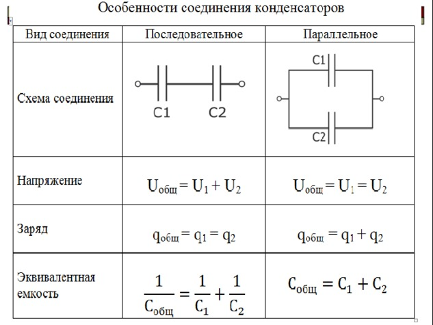

Равномерное движение
1) Средняя скорость
$$\boxed{\vec{V} = \frac {\vec S} t \text{ [м/с]}} $$ $$\vec{V} - \text{средняя скорость (м/с)} $$ $$\vec S - \text{перемещение (м)} $$ $$t - \text{время за которое сделано перемещение (с)} $$2) Среднепутевая скорость
$$\boxed{{V} = \frac {L} t \text{ [м/с]}}$$ $$V - \text{среднепутевая скорость (м/с)}$$ $$L - \text{путь (м)}$$ $$t - \text{время (с)}$$Равноускоренное движение
3) Зависимость координат от времени при равноускоренном движении
$$\boxed{X(t) = X_{0} + V_{0_{x}}\cdot t + {{a_{x} \cdot t^2 \over 2}} \text { [м]}}$$ $$X \text{ - конечная координата тела (м)} $$ $$X_{0} - \text{начальная координата тела (м)}\\$$ $$V_{0_{x}} - \text{начальная скорость тела (м/с)}$$ $$t \text{ - рассматриваемый промежуток времени (с) } $$ $$a_{x} - \text{ускорение (м/с²)} $$4) Перемещение при равносукоренном движении (три формулы)
$$\boxed{ S_{x} = {V_{К_{x}}^2 - V_{0_{x}}^2 \over 2a_{x}} \text { [м]}}$$ $$S_{x} - \text{перемещение(м)} $$ $$V_{К_{x}} - \text{конечная скорость тела (м/с)} \\ $$ $$V_{0_{x}} - \text{начальная скорость тела (м/с)}\\ $$ $$a_{x} - \text{ускорение (м/с²)} \\ $$
$$ \boxed{S_{x} = {V_{К_{x}} + V_{0_{x}} \over 2} \cdot t \text{ [м]}}$$ $$S_{x} - \text{перемещение(м)} $$ $$V_{0_{x}} - \text{начальная скорость тела (м/с)} $$ $$V_{К_{x}} \text{ - конечная скорость тела (м/с) } $$ $$t - \text{Время} (с) $$
$$\boxed{ S_{x} = V_{0_{x}}\cdot t + {{a_{x} \cdot t^2 \over 2}} \text { [м]}}$$ $$S_{x} - \text{перемещение(м)} $$ $$V_{0_{x}} - \text{начальная скорость тела (м/с)}\\$$ $$a_{x} - \text{ускорение (м/с²)} \\$$ $$t - \text{рассматриваемый промежуток времени (с) } \\$$
5) Зависимость скорости от времени при равноускоренном движении
$$\boxed{ V_x(t) = V_{0_{x}} + {{a_{x} \cdot t}} \text { [м/c]}}\\$$ $$V_{0_{x}} - \text{начальная скорость тела (м/с)}$$ $$a_{x} - \text{ускорение (м/с²)} $$ $$t \text{ - рассматриваемый промежуток времени (с) } $$ $$V_{x} \text{ - конечная скорость тела (м/с)} $$Динамика
6) Сила тяжести
$$ \boxed{\vec{F} = {m} \cdot {\vec{g}} \text{ [H]}}$$ $$ \vec{F} - \text{сила тяжести (H)} $$ $$ m - \text{ масса тела (кг)} $$ $$ {\vec{g}} - \text{ускорение свободного падения (м/с²)} $$7) Сила упругости
$$ \boxed{{\vec{F}_{упр}} = {-k} \cdot {\Delta\vec{l}} \text{ [H]}}$$ $$ {\vec{F}_{упр}} - \text{сила упругости (H)} $$ $$ {k} - \text{коэффициент жесткости тела (H/м)} $$ $$ {\Delta\vec{l}} - \text{изменение длины пружины (м)} $$8) Сила трения скольжения
$$ \boxed{{{F}_{тр}} = {μ} \cdot {N} \text{ [H]}}$$ $$ {{F}_{тр}} - \text{сила трения (H)} $$ $$ {μ} - \text{коэффициент трения} $$ $$ N - \text{сила реакции опоры (H)} $$9) Сила всемирного гравитационного приятжения (формула без векторов)
$$ \boxed{{F} = {{G} } \cdot{m_{1} \cdot m_{2} \over r^2 } \text{ [H]}}$$ $$ {F} - \text{сила гравитационного взаимодействия (H)} $$ $$ {G} - \text{гравитационная постоянная (H · м² / кг² )} $$ $$ m_{1} , m_{2} - \text{масса взаимодействующих тел (кг)} $$ $$ r - \text{ расстояние между центрами масс тела (м)} $$10) Сила Архимеда
$$ \boxed{{\vec{F}_{арх}} = {-ρ} \cdot {\vec{g}} \cdot {V_{погруж}}\text{ [H]}}$$ $$ {\vec{F}_{арх}} - \text{сила Архимеда (H)} $$ $$ {ρ} - \text{плотность жидкости или газа (кг/м³)} $$ $$ {\vec{g}} - \text{ускорение свободного падения (м/с²)} $$ $$ V_{погруж} - \text{ объем погруженной части тела (м³)} $$11) Второй закон Ньютона
$$ \boxed{\vec{a} = \frac {\vec F} m\text{ [м/с²]}}$$ $$ \vec{a} - \text{ускорение тела (м/с²)} $$ $$ \vec {F} - \text{сумма всех сил действующих на тело, (H)} $$ $$m - \text{масса тела (кг)} $$12) Третий закон Ньютона (формула+формулировка)
$$ \boxed{\vec{F_{1_{2}}} = \vec{ -{F_{2_{1}}}}}$$ $$ \vec{F_{1_{2}}} - \text{сила, действующая на первое тело со стороны второго тела (H)} $$ $$ \vec{ -F_{2_{1}}} - \text{сила, действующая на второе тело со стороны первого (H)} $$
Третий закон Ньютона - при взаимодействии двух тел возникает пара сил, которые
1. равны по модулю
2. направлены вдоль одной прямой
3. противоположены по направлению
4. одной природы

Статика
13) Момент силы
$$ \boxed{M = {F \cdot L} \text{ [Н · м]}} $$ $$M - \text{момент силы (Н · м)}$$ $$F - \text{сила (Н)} $$ $$L - \text{расстояние от точки оси вращения до линии действия силы (м)} $$Законы Сохранения
14) Механическая работа
$$\boxed{ {A} = {\left|\vec{F}\right| \cdot \left|\vec{S}\right| \cdot cos\ 𝜑 } = {(\vec{F},\vec{S})} \text{ [Дж]}}$$ $$A - \text{Механическая работа (Дж)}$$ $$\vec{F} - \text{Вектор силы, действующей на тело (Н)}$$ $$\vec{S} - \text{Вектор перемещения (м)}$$ $$cos\ 𝜑 - \text{косинус угла между вектором силы и вектором перемещения}$$15) Мощность (две формулы)
$$\boxed{ {N} = {A \over t } \text{ [Вт]}}$$ $$N - \text{мощность (Вт)}$$ $$A - \text{работа (Дж)}$$ $$t - \text{время (с)}$$ $$\boxed{ {N} = {\left|\vec{F}\right| \cdot \left|\vec{V}\right| \cdot cos\ 𝜑} \text{ [Вт]}}$$ $$N - \text{мощность (Вт)}$$ $$\vec{F} - \text{постоянная сила, действующая на тело (Н)}$$ $$\vec{V} - \text{скорость тела (м/с)}$$ $$cos\ 𝜑 - \text{косинус угла между вектором силы и вектором скорости}$$16) Коэффициент полезного действия
$$ \boxed{η = {{A_{полез} \over A_{затр}}} \ \cdot 100\% } $$ $$η - \text{Коэффициент полезного действия (%)}$$ $$A_{полезная} - \text{полезная работа (Дж)}$$ $$A_{полная} - \text{полная работа (Дж)}$$17) Кинетическая энергия
$$\boxed{ {K} = {{m}\ \cdot v^2 \over 2 } \text{ [Дж]}}$$ $$K - \text{кинетическая энергия (Дж)}$$ $$m - \text{масса тела (кг)}$$ $$v - \text{скорость тела (м/с)}$$18) Потенциальная энергия тела вблизи поверхности земли
$$\boxed{ {П} = {{m}\ \cdot g \cdot h } \text{ [Дж]}}$$ $$П - \text{потенциальная энергия (Дж)}$$ $$m - \text{масса тела (кг)}$$ $$g - \text{ускорение свободного падения (м/с²)}$$ $$h - \text{расстояние от центра масс тела до потенциального нуля (м)}$$19) Потенциальная энергия сжатой пружины
$$\boxed{ {П} = {{k}\ \cdot \Delta x^2 \over 2 } \text{ [Дж]}}$$ $$П - \text{потенциальная энергия (Дж)}$$ $$k - \text{коэффициент жесткости пружины (Н/м)}$$ $$\Delta x - \text{величина на которую сжата или растянута пружина (м)}$$20) Закон сохранения энергии
$$ \boxed{E_{к} + E_{п} = const = E_{пм}} $$ $$E_{к} - \text{кинетическая энергия (Дж)}$$ $$E_{п} - \text{потециальная энергия (Дж)}$$ $$E_{пм} - \text{полная механическая энергрия (Дж)}$$21) Связь между работой и энергией
$$ \boxed{А = \Delta E} $$ $$А - \text{работа (Дж)}$$ $$\Delta E - \text{изменение кинетической энергии (Дж)}$$22) Закон сохранения заряда (формула + формулировка)
$$ \boxed{q{1} + q_{2}+...+q_{n} = const} $$ $$ \boxed{\sum_{\imath=1}^{n} q_\imath = \mathrm{const}} $$ $$q_\imath - \text{заряд (Кл)}$$ $$\text{В замкнутой системе алгебраическая сумма электрических зарядов сохраняется постоянной.} $$Электростатика
23) Электризация (определение)
$$Электризация \text{ - процесс приобретения противоположного по знаку и одинаковому по модулю заряда двух нейтральных тел посредством трения.} $$24) Электростатическая индукция (определение)
$$Электростатическая \ индукция \text{ - процесс перераспределения заряда у нейтрального тела посредством электрического поля.} $$25) Закон Кулона
$$ \boxed{F = {1\over 4 \cdot \pi \cdot\varepsilon \cdot \varepsilon_{0}} \cdot {\left| q_{1} \right| \cdot \left| q_{2} \right| \over r^2} \text{ [Н]}} $$ $$F - \text{сила взаимодействия двух точечных неподвижных зарядов (Н)}$$ $$\varepsilon - \text{диэлектрическая проницаемость среды} $$ $$\varepsilon_{0} - \text{электрическая постоянная} \ {\text{Кл²} \over \text{Н} \cdot \text{м²}} $$ $$q_{1}, q_{2} - \text{абсолютные значения зарядов (Кл)} $$ $$r - \text{расстояния между зарядами (м)} $$26) Напряжённость электрического поля
$$ \boxed{\vec{E} = {\vec{F} \over q} \text{ [Н/Кл]}} $$ $$\vec{E} - \text{напряженность электрического поля (Н/Кл)} $$ $$\vec{F} - \text{сила с которой поле действует на пробный положительный заряд (Н)} $$ $$q - \text{величина заряда (Кл)} $$ $$Напряженность \text{ - векторная физическая величина, характеризующая электрическое поле по силе в выбранной точке этого поля, по модулю равная действию силы на помещенный в эту точку пробный заряд, а по направлению совпадает с движением этого пробного заряда.} $$27) Работа электрического поля
$$\boxed{ {A} = {q \cdot \left|\vec{E}\right| \cdot \left|\vec{d}\right| \cdot cos\ 𝜑 } = {q \cdot (\vec{E},\vec{d})} \text{ [Дж]}}$$ $$A - \text{работа электрического поля (Дж)} $$ $$q - \text{величина заряда (Кл)} $$ $$\vec{E} - \text{вектор напряженности электрического поля (В/м)} $$ $$\vec{d} - \text{ вектор перемещения частицы с зарядом q в однородном поле напряженностью E (м)} $$ $$cos\ 𝜑 - \text{косинус угла между вектором напряженностью E и вектором d}$$28) Потенциал (формула + определение)
$$\boxed{ {𝜑} = {W_{эл} \over q} \text{ [В]}}$$ $$𝜑 - \text{потенциал (В)} $$ $$W_{эл} - \text{энергия, которую приоретает заряд в рассмотренной точке электрического поля (Дж)} $$ $$q - \text{величина заряда (Кл)} $$ $$\text{Потенциал — скалярная физическая величина, которая показывает сколько работы надо совершить для перемещения заряда из рассматриваемой точки электрического поля на бесконечность.} $$29) Связь потенциала и напряженности
$$\boxed{\Delta{𝜑} = {\left|\vec{E}\right| \cdot \left|\vec{d}\right| \cdot cos\ 𝜑 } = {(\vec{E},\vec{d})} \text{ [В]}}$$ $$𝜑 - \text{разность потенциалов (В)} $$ $$\left|\vec{E}\right| - \text{напряженность электрического поля (Н/Кл)} $$ $$\left|\vec{d}\right| - \text{перемещение (м)} $$ $$cos\ 𝜑 - \text{косинус угла между вектором напряженностью и вектором перемещения}$$Электродинамика
30) Электрический ток (определение)
$$Электризация \text{ - процесс приобретения противоположного по знаку и одинаковому по модулю заряда двух нейтральных тел посредством трения.} $$31) Сила тока
$$ \boxed{I = {q \over t} \text{ [А]}} $$ $$I - \text{сила тока (А)}$$ $$q - \text{электрический заряд (Кл)} $$ $$t - \text{время (с)} $$ $$\text{Сила тока — скалярная физическая величина, показывающая какое количество заряда проходит через поперечное сечение проводника за единицу времени.} $$32) Напряжение
$$ \boxed{U = {А_{эл} +А_{ст} \over q} \text{ [В]}} $$ $$U - \text{напряжение (В)}$$ $$А_{эл} - \text{работа электрического поля по перемещению заряда (Дж)} $$ $$А_{ст} - \text{работа сторонних сил (Дж)} $$ $$q - \text{величина заряда (Кл)} $$ $$\text{Ёмкость — скалярная физическая величина, показывающая как много заряда может хранить на себе проводник при заданном воздействующем на него внешнем напряжении.} $$33) Сопротивление
$$ \boxed{R = {\rho_{уд} \cdot L \over S} \text{ [Ом]}} $$ $$R - \text{сопротивление (Ом)}$$ $$\rho_{уд} - \text{удельное сопротивление проводника} {{\text{Ом} \cdot \text{мм²}} \over \text{м}} $$ $$L - \text{длина проводника (м)} $$ $$S - \text{площадь поперечного сечения (мм²)} $$34) Закон Ома для участка цепи (формулировка + формула)
$$ \boxed{U = {I \cdot R} \text{ [В]}} $$ $$U - \text{напряжение (В)}$$ $$I - \text{сила тока (А)}$$ $$R - \text{сопротивление (Ом)}$$35) ЭДС источника
$$ \boxed{{\varepsilon} = {A_{эл} \over q} \text{ [В]}} $$ $$\varepsilon - \text{ЭДС источника (В)}$$ $$A_{эл} - \text{работа сторонних сил по распределению и перемещению заряда (Дж)} $$ $$q - \text{заряд (Кл)} $$36) ЭДС индукции и самоиндукции (две формулы)
$$ \boxed{\varepsilon_{i} = - { \Delta Ф \over \Delta t}; \ \varepsilon_{si} = - L\cdot{ \Delta I \over \Delta t} \text{ [В]}} $$ $$\varepsilon_{i} - \text{ЭДС индукции (В)}$$ $$\Delta Ф - \text{изменение магнитного потока (Фб)} $$ $$\Delta t - \text{время (с)} $$ $$\varepsilon_{si} - \text{ЭДС самоиндукции (В)}$$ $$L - \text{индуктивность катушки (Гн)} $$ $$\Delta I - \text{изменение силы тока (А)} $$ $$\Delta t - \text{время (с)} $$37) Законы Киргофа (формулы)
$$\boxed{\sum_{\iota=1}^n{ I_{\iota}}={0}}$$ $$\boxed{\sum_{i=1}^n U_i = \sum_{i=1}^n \varepsilon_i}$$38) Сопротивление при последовательном и параллельном соединении резисторов (схема + формула)
$$\text{При последовательном соединении резисторов}$$ $$\boxed{R_{общ}=\sum_{\iota=1}^n{ R_{i}}}$$ $$\text{При параллельном соединении резисторов}$$ $$\boxed{R_{общ}=\sum_{\iota=1}^n{ {R_{i}}^{-1}}}$$
39) Ёмкость (определение + формула)
$$\boxed{C = {q \over \Delta𝜑}; \ C = {\varepsilon \cdot \varepsilon_{0} \cdot S \over d} \text{ [Ф]}}$$ $$C - \text{ёмкость конденсатора (Ф)}$$ $$q - \text{заряд (Кл)} $$ $$\Delta𝜑 - \text{разность потенциалов (В)}$$ $$\varepsilon - \text{диэлектрическая проницаемость среды} $$ $$\varepsilon_{0} - \text{электрическая постоянная} \ {\text{Кл²} \over \text{Н} \cdot \text{м²}} $$ $$S - \text{площадь перекрытия обкладок (м²)} $$ $$d - \text{расстояние между пластинами (м)} $$ $$\text{Ёмкость — скалярная физическая величина, показывающая как много заряда может хранить на себе проводник при заданном воздействующем на него внешнем напряжении.} $$40) Ёмкость при последовательном и параллельном соединении конденсаторов (схема + формула)
$$\text{При последовательном соединении конденсаторов}$$ $$\boxed{C_{общ}=\sum_{\iota=1}^n{ {C_{i}}^{-1}}}$$ $$\text{При параллельном соединении конденсаторов}$$ $$\boxed{C_{общ}=\sum_{\iota=1}^n{ C_{i}}}$$